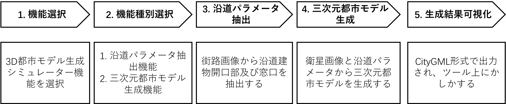
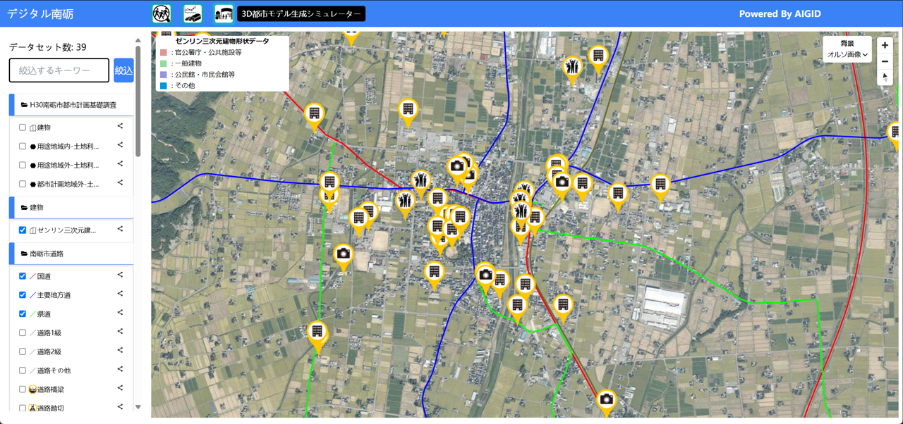
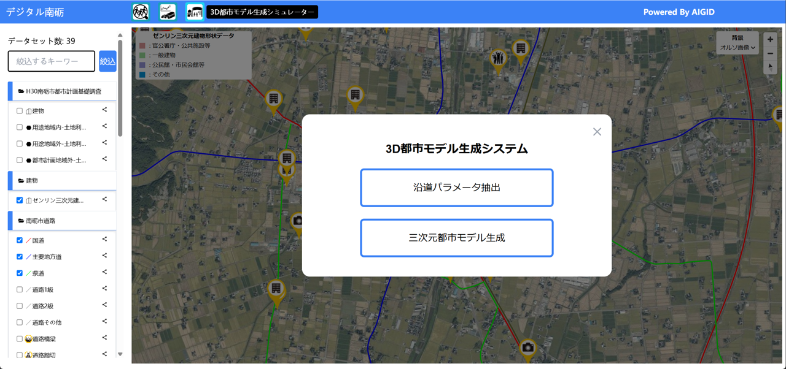
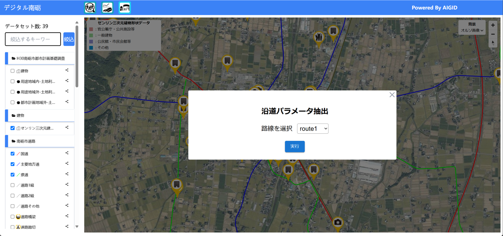
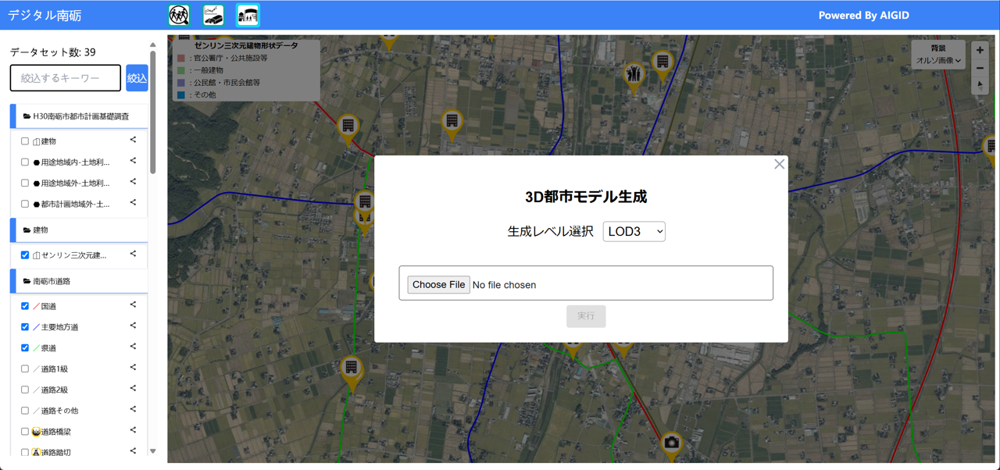

操作マニュアル
本書について
本書では、3D都市モデル生成シミュレータシステム（以下「本システム」という。）の操作手順について記載しています。
3D都市モデル生成までの流れ

1 機能選択
① デジタルシティサービスにアクセスし、“3D都市モデル生成シュミレーター”をクリックし、生成を行う画面へ移動 http://gen3d.sekilab.global/

2 機能種別選択

3 沿道パラメータ抽出
抽出ルートを設定します。実行には約40分かかります。

4 三次元都市モデル生成
衛星画像を入力し(.tif)、生成するLoDを設定します。実行には約10-15分かかります。

5 生成結果可視化

①入力衛星画像。 ②生成結果可視化：ツール内で直接生成された3D都市モデルを閲覧（ズーム，回転）できます。